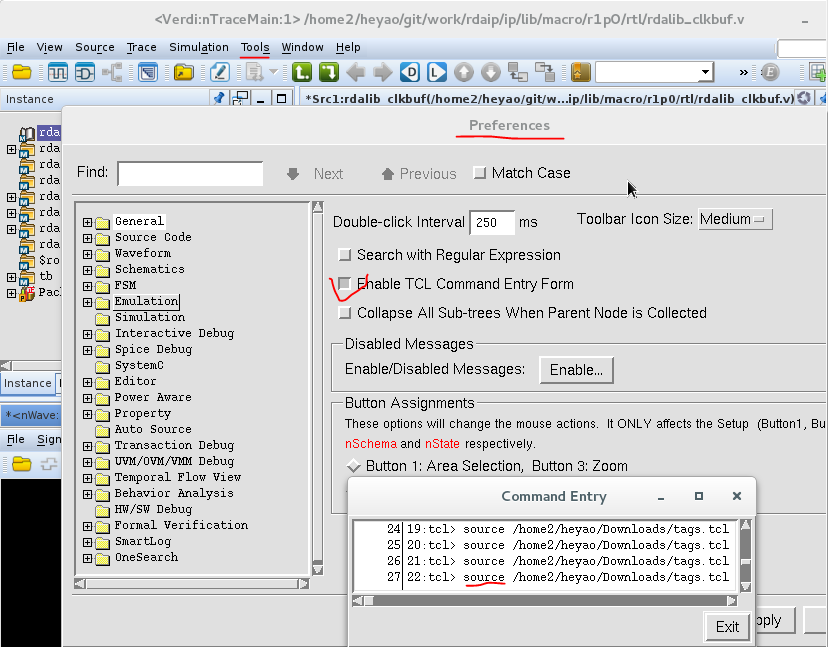

Generate Tags for Emacs by Verdi
Generate Tags for Emacs by Verdi
无意中看到SNUG的一个文章，作者通过使用Verdi来生成Emacs以及Vim的tags文件，很棒。我一直没有找到特别好的办法来用Emacs浏览verilog 代码工程，之前也是使用Emacs的插件projectile来grep关键字。我赶紧按照作者的描述操作起来了。
作者的tcl脚本是放在这里的 ，居然排在第一个。
在Verdi打开tcl命令窗口，然后source下载的tcl脚本。
生成的vim版本的tags文件是ok的，能用。Emacs版本的TAGS文件居然不能跳转！
仔细查了一遍，应该是作者把emacs tags文件的格式弄错了，看来作者一定是vim用户了，或者我使用的emacs版本（25.2）太高了？
再看了一遍论文，作者文字描述的格式和他实际脚本生成的TAGS格式不一致，把tag_definition_text丢掉了，所以跳转有问题。

去官网查到了npi参考手册，fix一下tcl代码。
foreach {index tagInfo} $sorted_ident {
set srcFile [lindex [split $tagInfo] 1]
if {$fileName == $srcFile} {
set tag [lindex [split $tagInfo] 0]
set line [lindex [split $tagInfo] 2]
set offset $byteCounts($line)
#======= fix by yaohe begin ===========#
#set entry "\x7f$tag\x01,$offset"
set file_hdl [npi_text_file_by_name -name "$srcFile"]
set line_hdl [npi_text_line_by_number -ref $file_hdl -number $line]
set line_content [npi_text_property_str -type npiTextLineContent -ref $line_hdl]
regsub {\n$} $line_content {} line_content
set entry "$line_content\x7f$line,$offset"
#======= fix by yaohe end ===========#
append entryList "\n" $entry
}
}
终于好用了。
新的tcl代码我备份我的github上，因为实在联系不上作者。
Comments